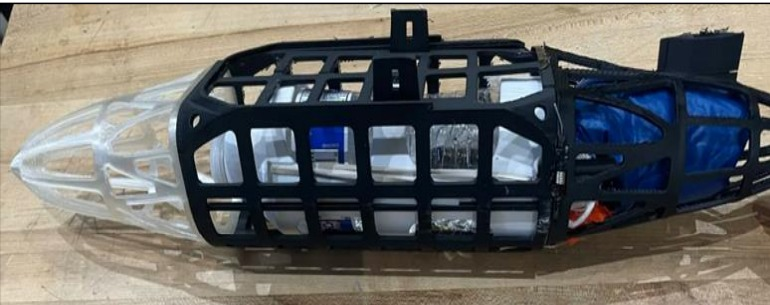
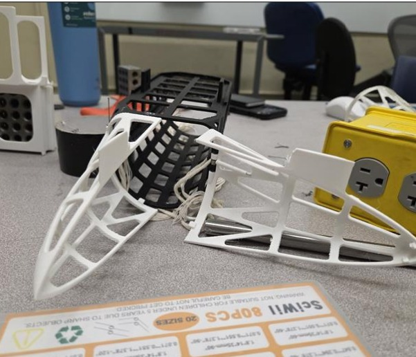
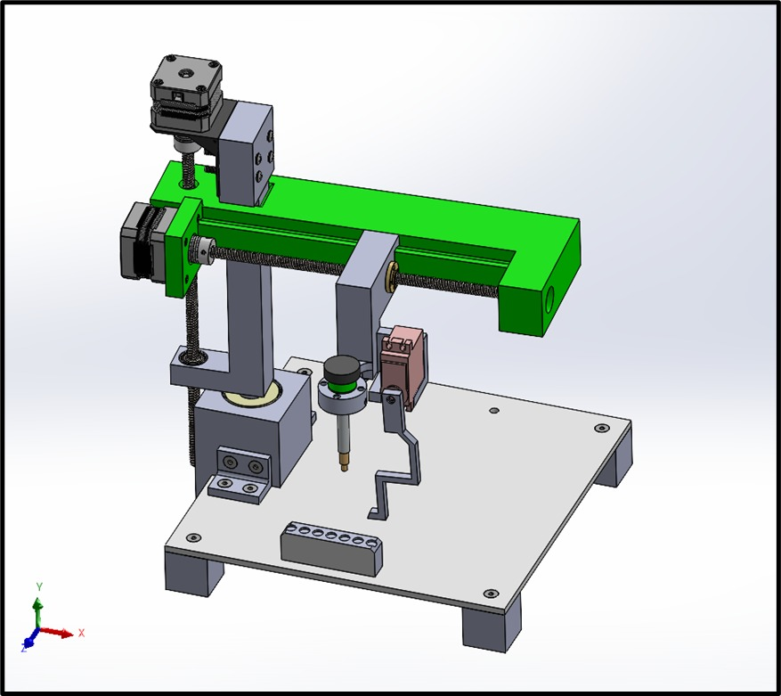
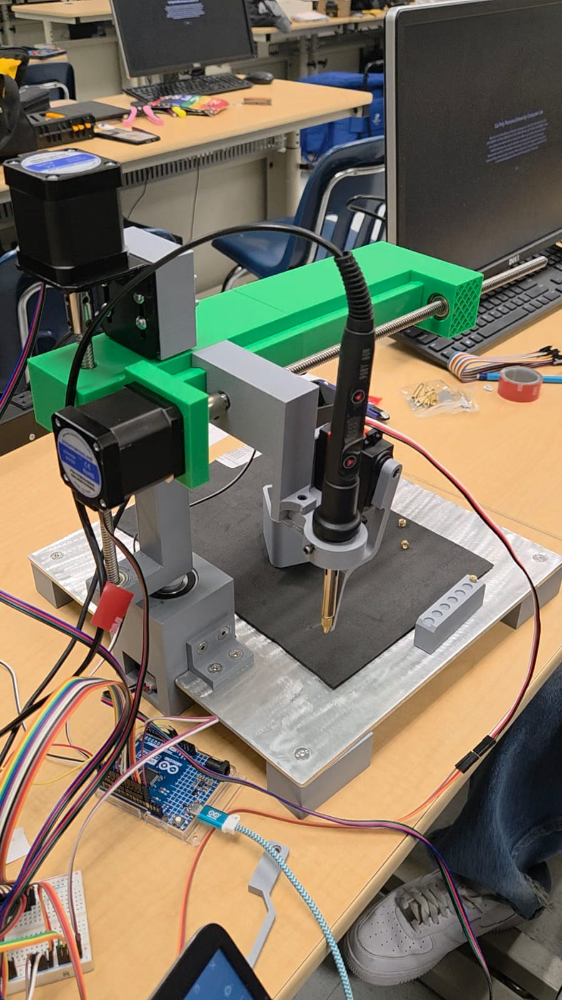

Mechanical Engineering Student | Hands-On Diagnostics | Testing & Design
I am a Mechanical Engineering student with hands-on experience in mechanical, electrical, and hydraulic troubleshooting, equipment diagnostics, and engineering project work. My background combines practical field experience with engineering analysis, design, testing, and problem solving.
I am interested in engineering roles involving testing, design validation, mechanical systems, vehicle performance, and product development.
UAV Payload Detachment Mechanism




Completed engineering coursework and projects involving mechanical design, stress analysis, material selection, CAD modeling, and design calculations.
Mechanical troubleshooting, equipment diagnostics, hydraulic systems, and component inspection.
DC electrical troubleshooting, schematic reading, sensors, and system-level diagnostics.
SolidWorks, MATLAB, FEMAP/NASTRAN, Microsoft Word, and Excel.
Technical communication, teamwork, problem solving, customer service, and fast-paced repair environments.
My resume highlights my mechanical engineering education, hands-on technician experience, engineering projects, and technical skills.
Add your resume PDF to this repository, then update the link below to match the file name.
View ResumeEmail: your-email@example.com
LinkedIn: Add your LinkedIn link here
GitHub: Add your GitHub profile link here